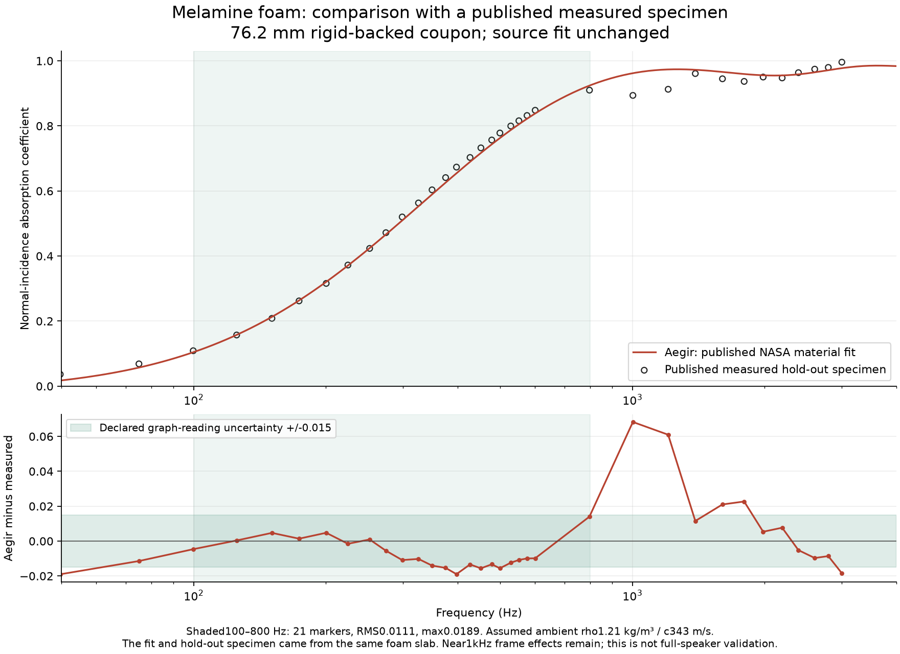
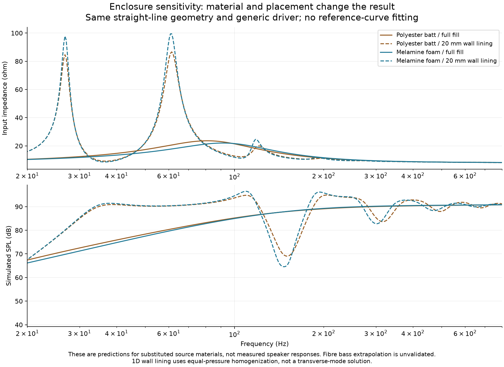

2026-11-03 · Aegir0.9.4 · Source-specific material validation
Stuffing and acoustic foam: models, placement and checks
The new models distinguish material properties from placement. Agreement below is with published measurements of a material coupon. It does not validate an entire loudspeaker, every foam grade, or a different batch.
Measured foam check
Allen & Schiller's NASA2016 study supplies measured airflow resistivity and an eight-coefficient propagation fit. Figure4 checks a separate76.2mm specimen not used for that fit, from the same foam slab. Aegir implements the source coefficients without fitting. Square-marker centres were extracted from original PDF vector objects. Assumed ambient rho1.21kg/m³ / c343m/s is explicit.
| Retained marker band (Hz) | Points | Absorption RMS error | Maximum error |
|---|
| [100, 800] | 21 | 0.01113 | 0.01894 |
| [100, 1000] | 21 | 0.01113 | 0.01894 |
| [50, 10000] | 34 | 0.01944 | 0.06828 |
The declared graph reading uncertainty is ±0.015 absorption and ±1% frequency. Source measurement uncertainty is not asserted. The near1kHz frame-motion discrepancy remains. Retained markers extend only to about3kHz even though the source axis reaches10kHz.

What changed
Added Miki fibre propagation using measured airflow resistivity, five-parameter JCA for characterized foams, and source-defined empirical coefficients alongside existing JCAL and historical Hollofil models. Source-specimen presets retain provenance and range limitations. Wall lining has a thickness and an open air core; the3D steady-tone path places actual material cells near channel walls.
1D lining is a long-wavelength equal-pressure approximation. The3D recurrence matches the selected frequency only. It does not predict broadband porous-material startup; rigid frames, isotropy and adequate grid resolution remain assumptions.
Same enclosure, different treatment
These12 cases are unfitted sensitivities for six materials, each as full fill and20mm lining. The source specimens differ and should not be interpreted as interchangeable grades. The driver is the existing generic reference driver with schematic mechanical dimensions.

Source specimens
| Source specimen | Evidence | Qualification |
|---|
| Hollow polyester · historical loose fill | published-fit | For the historical Hollofil correlation only. Density is adjustable within its retained calibration range; it is not a generic wool or foam model. |
| Polyester batt · WM20 research sample | published-measurement | Measured airflow resistance; Miki is an empirical fibrous approximation. Specific uncompressed test specimen; no conversion from loose-fill density. |
| Polyester batt · compressed WM20 sample | published-measurement | Separate measured compressed specimen. Compression changes resistance; this is not a density scaling rule. |
| Glass wool · Miki research example | published-fit | Published fitted example, not manufacturer specifications. Mineral wool and other fibre products need their own measured resistance. |
| Melamine foam · measured research sample | published-measurement | Measured for one foam sample. Use measured properties for your own grade or batch when available. |
| Melamine foam · NASA MLULb research fit | published-fit | Fit weighted below1kHz; approximate declared use band100–1000Hz from the study plots. Frame effects near1kHz are not modelled. Not a universal foam law. |
Regression checks
The existing empty and stuffed King2006 sweeps retain identical2008 frequency predictions. The old stuffed opening-to-driver discrepancy remains 2.735dB RMS. The previous non-monotonic3D cavity-volume error is not fixed by this work.
Independent Python complex arithmetic, JCA limits, reciprocal transfer matrices, shell placement and steady-tone recurrence checks accompany native UI save/reload, response and WebGPU foam-layer runs. See the verification record and full numeric comparison. Agent research record · Equations and usage.